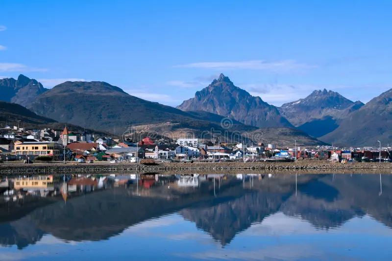

Ushuaia - Argentina
Conheça uma das cidades mais encantadoras do mundo.
Sobre o Lugar
Este destino oferece uma mistura rica de história, culinária fascinante e paisagens naturais de tirar o fôlego. Perfeito para aventureiros e famílias.
Sobre a Cidade
Ushuaia é mundialmente conhecida como a cidade mais austral do planeta. Localizada na Argentina, ela combina paisagens deslumbrantes da Cordilheira dos Andes com o mítico Canal de Beagle.
| Indicador | Dado Oficial |
|---|---|
| Estatuto | Capital da Província da Terra do Fogo |
| País | Argentina |
| População | 82.615 habitantes (Censo) |
| Área Territorial | 9.017 km² (Departamento) |
| Altitude | 58 metros acima do mar |
Clima ⛅
Temperatura: 24°C
Condição: Parcialmente Nublado
Vento: 12 km/h
Sensação Térmica: N/A